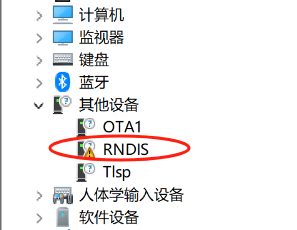
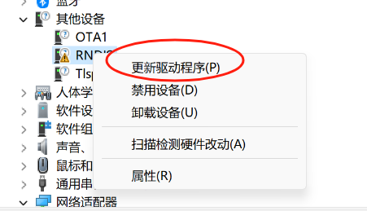
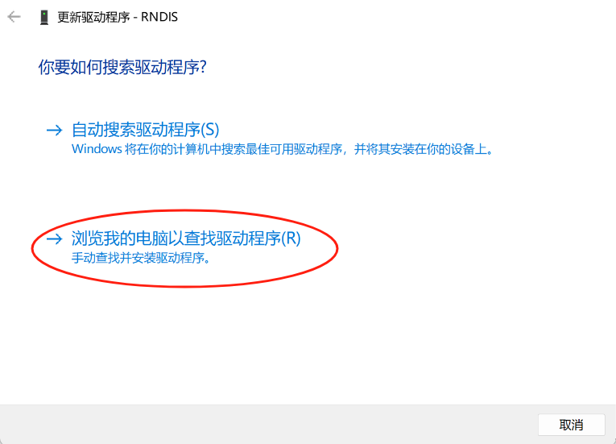
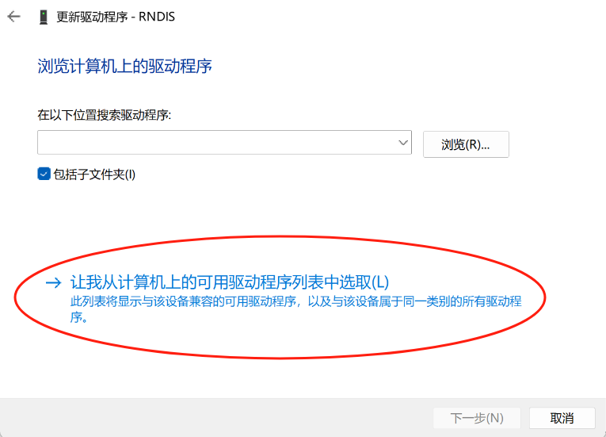
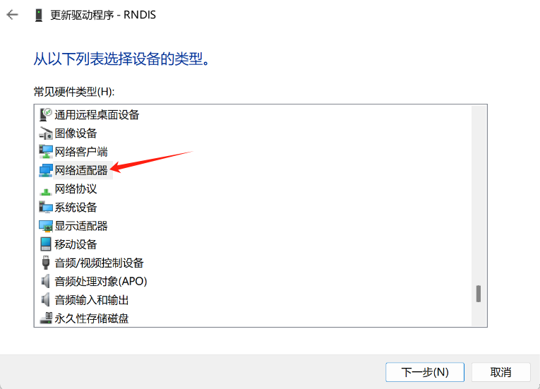
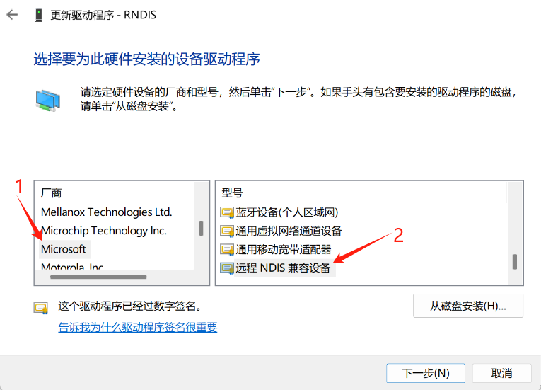
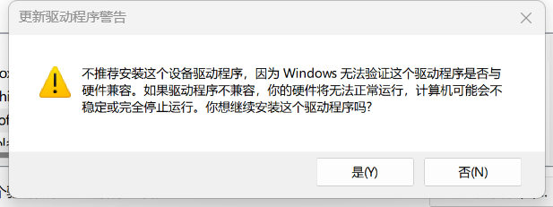
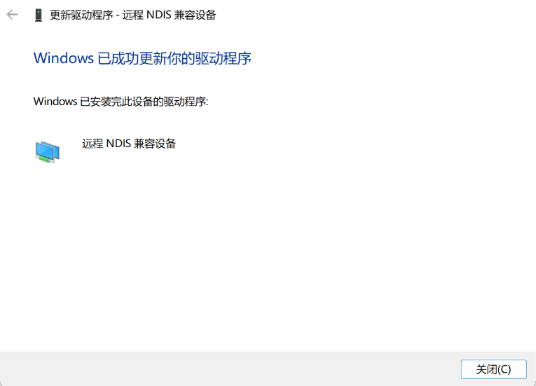
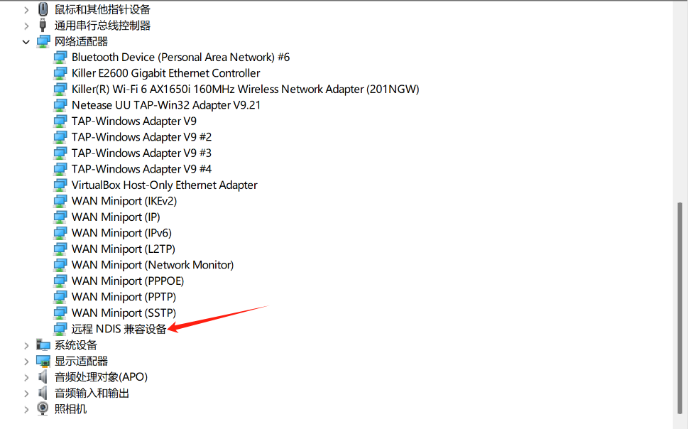
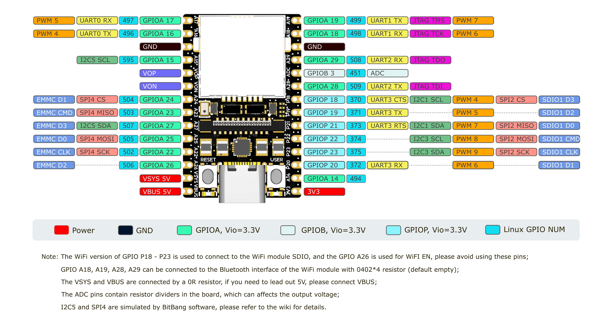

中文
中文LicheeRV Nano Peri Use
更新历史
| 日期 | 版本 | 作者 | 更新内容 |
|---|---|---|---|
| 2024-4-15 | v0.2 | BuGu |
|
| 2024-1-26 | v0.1 | 30028 |
|
连接开发板
UART0
将UART串口连接到板子的 GND、A16（TX）、A17（RX）
然后使用终端软件连接串口，波特率115200
在USB接口上的SBU1/2上也引出了UART0，可使用USB TypeC转接板引出RX0、TX0
禁止 UART0 输出日志
首先将用户空间的输出转到别的tty设备上:
#include <stdlib.h>
#include <unistd.h>
#include <sys/ioctl.h>
#include <fcntl.h>
int main(int argc, char *argv[]) {
int fd;
if (argc < 2) {
fprintf(stderr, "usage: %s /dev/ttyX\n", argv[0]);
exit(EXIT_FAILURE);
}
fd = open(argv[1], O_RDWR);
if (fd < 0) {
perror("open");
exit(EXIT_FAILURE);
}
ioctl(fd, TIOCCONS);
close(fd);
exit(EXIT_SUCCESS);
}
riscv64-unknown-linux-gcc tioccons.c -o tioccons
./tioccons /dev/tty2 # 将/dev/console转接到tty2上
然后设置内核日志等级:
echo 0 > /proc/sys/kernel/printk
测试方法:
echo userspace > /dev/console
echo kernel > /dev/kmsg
另一种方法是在/boot/uEnv.txt中加入以下内容将console换到别的tty上:
consoledev=/dev/ttyX
UART1 UART2 UART3
UART1和2的引脚默认用作连接UART蓝牙芯片:
mmio_write_32(0x03001070, 0x1); // GPIOA 28 UART1 TX
mmio_write_32(0x03001074, 0x1); // GPIOA 29 UART1 RX
mmio_write_32(0x03001068, 0x4); // GPIOA 18 UART1 CTS
mmio_write_32(0x03001064, 0x4); // GPIOA 19 UART1 RTS
如果只想使用UART1，则不需要更改PINMUX，只需要连接 GPIOA28 GPIOA29
如果想要同时使用UART1和UART2的功能，则需要写入寄存器来设置引脚的PINMUX:
在Linux用户空间可以使用devmem工具来写入寄存器
shell:
devmem 0x03001070 32 0x2 # GPIOA 28 UART2 TX
devmem 0x03001074 32 0x2 # GPIOA 29 UART2 RX
devmem 0x03001068 32 0x6 # GPIOA 18 UART1 RX
devmem 0x03001064 32 0x6 # GPIOA 19 UART1 TX
UART3 的引脚被默认复用为SDIO:
mmio_write_32(0x030010D0, 0x0); // D3
mmio_write_32(0x030010D4, 0x0); // D2
mmio_write_32(0x030010D8, 0x0); // D1
mmio_write_32(0x030010DC, 0x0); // D0
mmio_write_32(0x030010E0, 0x0); // CMD
mmio_write_32(0x030010E4, 0x0); // CLK
如果想要使用UART3的功能，则需要写入寄存器来设置引脚的PINMUX:
在Linux用户空间可以使用devmem工具来写入寄存器
shell:
devmem 0x030010D0 32 0x5 # GPIOP 18 UART3 CTS
devmem 0x030010D4 32 0x5 # GPIOP 19 UART3 TX
devmem 0x030010D8 32 0x5 # GPIOP 20 UART3 RX
devmem 0x030010DC 32 0x5 # GPIOP 21 UART3 RTS
Linux系统中的串口使用:
C:
/* TODO */
shell:
stty -F /dev/ttyS1 115200 # 设置UART1波特率为115200
stty -F /dev/ttyS1 raw # 设置tty为RAW模式
echo -n UUU > /dev/ttyS1 # 发送 UUU(0x55 0x55 0x55)
hexdump -C /dev/ttyS1 # 以HEX格式显示收到的数据
usb rndis 网口
将板子的usb typec口连接到电脑时会提供一个usb rndis网卡设备(linux gadget 提供)
PC会使用DHCP自动获取地址
将自动获取的IPv4地址最后一位换成1即是板子的IPv4地址:
10.44.55.66 PC机的IPv4地址
10.44.55.1 板子的IPv4地址
然后使用 ssh root@板子的IP地址进行连接:
用户名: root
密码: root
Windows 系统下，需要进行一些配置。
打开设备管理器，找到下面的选项：

选择更新驱动程序：

选择浏览我的电脑以查找驱动程序：

选择让我从计算机上的可用驱动程序列表中选取：

在设备类型列表中选择网络适配器：

厂商选择 Microsoft，型号选择远程NDIS兼容设备：

若弹出这个警告请点击确定：

更新成功后显示如下：

然后可在设备管理器中的网络适配器列表下找到远程NDIS兼容设备项：

网线连接
将网线连接到板子，板子开机时会使用DHCP自动获取地址
板子镜像默认启用了MDNS服务
使用命令:
avahi-browse -art | grep licheervnano
列出广播域中域名带有的licheervrvnano的设备
然后使用:
ssh root@licheervnano-XXXX.local
连接板子
SOC相关
查看SOC温度：
cat /sys/class/thermal/thermal_zone0/temp
查看SOC时钟：
cat /sys/kernel/debug/clk/clk_summary
USB
device
在sd卡第一个分区创建 usb.dev 文件，并且删掉 usb.host 文件:
touch /boot/usb.dev
rm /boot/host.host
如果需要启用acm虚拟串口:
touch /boot/usb.GS0
如果需要启用rndis虚拟网卡:
touch /boot/usb.rndis0
然后重启设备
host
在sd卡第一个分区创建 usb.host 文件，并且删掉 usb.dev 文件:
touch /boot/usb.host
rm /boot/usb.dev
然后重启设备，给排针的VBUS或VSYS供5V电源，连接设备到TYPEC口，在系统内使用lsusb检查设备是否连接
PWM
引脚复用
PWM的引脚默认被用作UART，如果想用作PWM，则需要设置寄存器:
devmem 0x03001064 32 2 # GPIOA19 PWM7
devmem 0x03001068 32 2 # GPIOA18 PWM6
SYSFS方式操纵PWM
# 如何获取PWM节点的位置:
# SG2002有4个pwm chip:
# pwmchip0 pwmchip4 pwmchip8 pwmchip12
# 每个chip里面有4路pwm
# 假设我们要使用pwm7:
# 4 < 7 < 8
# PWM7在pwmchip4中
cd /sys/class/pwm/pwmchip4/
# 7 - 4 = 3
echo 3 > export
cd pwm3
# 设置period
echo 10000 > period
# 设置duty_cycle
echo 5000 > duty_cycle
# 使能pwm输出
echo 1 > enable
# 然后使用逻辑分析仪接到PWM引脚，就可以看到PWM7引脚输出方波
Audio
licheerv nano 支持录音和播放，使用标准 ALSA 工具可以进行录音、播放等操作。
录音
首先设置麦克风音量，范围：0-24
amixer -Dhw:0 cset name='ADC Capture Volume' 24
如果没有找到amixer工具，也可以使用alsamixer(tui)
设置完成后开始录音：
arecord -Dhw:0,0 -d 3 -r 48000 -f S16_LE -t wav test.wav & > /dev/null &
播放
./aplay -D hw:1,0 -f S16_LE test.wav
GPIO
LicheeRV Nano引脚图&Linux GPIO编号：

系统内GPIO查看：
cat /sys/kernel/debug/gpio
GPIO操作
首先用 'devmem 0x0300xxxx 32 0xxx' 修改引脚的PINMUX到GPIO
寄存器查找方式（以A22为例）：在此处下载SG2002寄存器手册，手册中查找XGPIOA[22]，在表格中对应到GPIO，shell命令： 'devmem 0x03001050 32 0x03'
# xxx 为上图中Linux GPIO NUM，如A22：num=502
num=xxx
echo ${num} > /sys/class/gpio/export
# GPIO 写
echo out > /sys/class/gpio/gpio${num}/direction
echo 1 > /sys/class/gpio/gpio${num}/value
echo 0 > /sys/class/gpio/gpio${num}/value
# GPIO 读
echo in > /sys/class/gpio/gpio${num}/direction
cat /sys/class/gpio/gpio${num}/value
带WiFI模块的版本 GPIO P18 ~ P23 连接 WiFi 模块的 SDIO 接口，用于 WiFi 通信；GPIO A26 用作 WiFi EN，请避免使用这些引脚，普通版和仅网口版用户可自由定义这些引脚功能
GPIO A18、A19、A28、A29 由一颗0402*4排阻连接至WiFi模块的蓝牙接口，默认空贴，WiFi版用户可自由定义这些引脚的功能，若想启用蓝牙，请参照此处焊接对应电阻
UART
UART1/2
UART1和2的引脚默认用作连接UART蓝牙芯片:
mmio_write_32(0x03001070, 0x1); // GPIOA 28 UART1 TX
mmio_write_32(0x03001074, 0x1); // GPIOA 29 UART1 RX
mmio_write_32(0x03001068, 0x4); // GPIOA 18 UART1 CTS
mmio_write_32(0x03001064, 0x4); // GPIOA 19 UART1 RTS
如果想要同时使用UART1和UART2的功能，则需要写入寄存器来设置引脚的PINMUX:
在Linux用户空间可以使用devmem工具来写入寄存器
shell:
devmem 0x03001070 32 0x2 # GPIOA 28 UART2 TX
devmem 0x03001074 32 0x2 # GPIOA 29 UART2 RX
devmem 0x03001068 32 0x6 # GPIOA 18 UART1 RX
devmem 0x03001064 32 0x6 # GPIOA 19 UART1 TX
UART3
UART3 的引脚被默认复用为SDIO:
mmio_write_32(0x030010D0, 0x0); // D3
mmio_write_32(0x030010D4, 0x0); // D2
mmio_write_32(0x030010D8, 0x0); // D1
mmio_write_32(0x030010DC, 0x0); // D0
mmio_write_32(0x030010E0, 0x0); // CMD
mmio_write_32(0x030010E4, 0x0); // CLK
如果想要使用UART3的功能，则需要写入寄存器来设置引脚的PINMUX:
在Linux用户空间可以使用devmem工具来写入寄存器
shell:
devmem 0x030010D0 32 0x5 # GPIOP 18 UART3 CTS
devmem 0x030010D4 32 0x5 # GPIOP 19 UART3 TX
devmem 0x030010D8 32 0x5 # GPIOP 20 UART3 RX
devmem 0x030010DC 32 0x5 # GPIOP 21 UART3 RTS
Linux系统中的串口使用:
C:
/* TODO */
shell:
stty -F /dev/ttyS1 115200 # 设置UART1波特率为115200
stty -F /dev/ttyS1 raw # 设置tty为RAW模式
echo -n UUU > /dev/ttyS1 # 发送 UUU(0x55 0x55 0x55)
hexdump -C /dev/ttyS1 # 以HEX格式显示收到的数据
I2C
插针上引出了 I2C1 和 I2C3，将设备连接到其上即可。
使用前需要先正确设置 PINMUX：
# I2C1
devmem 0x030010D0 32 0x2 # GPIOP 18 I2C1 SCL
devmem 0x030010DC 32 0x2 # GPIOP 21 I2C1 SDA
# I2C3
devmem 0x030010E0 32 0x2 # GPIOP 22 I2C3 SCL
devmem 0x030010E4 32 0x2 # GPIOP 23 I2C3 SDA
然后可以使用 i2c-tools 进行 i2c 外设的操作，镜像中已经预装。
带WiFi模块的板卡（W、WE版）I2C1和I2C3硬件上连接到WiFi模块的SDIO，存在I2C无法读写的可能，PINMUX到I2C时WiFi模块不可用，可使用以下命令恢复WiFi连接：
# PINMUX到SDIO
devmem 0x030010D0 32 0x0
devmem 0x030010DC 32 0x0
devmem 0x030010E0 32 0x0
devmem 0x030010E4 32 0x0
# 重启WiFi服务
/etc/init.d/S30wifi stop
/etc/init.d/S30wifi start
摄像头和触摸屏接口共用I2C4，可使用 'i2cdetect -ry 4' 扫描设备。需注意I2C4处于1.8V电源域，连接其他设备时请注意电平匹配。
SPI
SPI2默认被复用作SDIO:
mmio_write_32(0x030010D0, 0x0); // D3
mmio_write_32(0x030010D4, 0x0); // D2
mmio_write_32(0x030010D8, 0x0); // D1
mmio_write_32(0x030010DC, 0x0); // D0
mmio_write_32(0x030010E0, 0x0); // CMD
mmio_write_32(0x030010E4, 0x0); // CLK
如果想要使用SPI2，则需要更改PINMUX:
devmem 0x030010D0 32 0x1 # GPIOP 18 SPI2 CS
devmem 0x030010DC 32 0x1 # GPIOP 21 SPI2 MISO
devmem 0x030010E0 32 0x1 # GPIOP 22 SPI2 MOSI
devmem 0x030010E4 32 0x1 # GPIOP 22 SPI2 SCK
简单测试SPI:
将SPI的MISO和MOSI连起来，然后执行:
spidev_test -D /dev/spidevN.N -p 1234 -v
# 将N.N换成对应的BUS
如果TX和RX的数据一样，则引脚复用没有问题
ADC
LicheeRV Nano插针上引出了一路12位ADC，在板内已做分压处理，如图：
经测试，ADC输入电压在0-4.6V时，对应ADC值为0000-4095
首先选择 ADC channel，这里以 ADC1 为例：
echo 1 > /sys/class/cvi-saradc/cvi-saradc0/device/cv_saradc
读取 ADC1 的值：
cat /sys/class/cvi-saradc/cvi-saradc0/device/cv_saradc
LCD
将屏幕的排线接到板子的MIPI接口，注意线序
创建或编辑sd卡第一个分区中的uEnv.txt文件，添加或修改panel字段:
注：镜像将第一个分区已经挂载到/boot目录下，可在终端中直接操作：
cd /boot
touch uEnv.txt
vi uEnv.txt
# 使用 'i' 进入编辑
# 使用 'Esc',':wq'保存并退出
7寸屏（型号以屏幕丝印为准）:
panel=zct2133v1
# 新屏
panel=mtd700920b
5寸屏（型号以屏幕丝印为准）:
panel=st7701_dxq5d0019_V0
# 早期测试5寸屏使用：
# panel=st7701_dxq5d0019b480854
3寸屏:
panel=st7701_d300fpc9307a
2.3寸屏:
panel=st7701_hd228001c31
如果想用framebuffer功能，则在sd卡第一个分区创建一个文件名为fb的文件:
touch /boot/fb
然后加载驱动:
/etc/init.d/S04fb start
调整屏幕背光亮度:
echo 0 > /sys/class/pwm/pwmchip8/pwm2/enable
echo 5000 > /sys/class/pwm/pwmchip8/pwm2/duty_cycle # 50%
echo 1 > /sys/class/pwm/pwmchip8/pwm2/enable
# some example:
#echo 2000 > /sys/class/pwm/pwmchip8/pwm2/duty_cycle # 20%
#echo 4000 > /sys/class/pwm/pwmchip8/pwm2/duty_cycle # 40%
#echo 7000 > /sys/class/pwm/pwmchip8/pwm2/duty_cycle # 70%
#echo 9000 > /sys/class/pwm/pwmchip8/pwm2/duty_cycle # 90%
测试屏幕显示:
首先按照上面的方法打开fb，然后执行:
fbpattern # 显示SIPEED LOGO和测试用的图案
触摸屏
将触摸屏排线接到板子的触摸屏接口，注意线序
如果是gt911芯片，则需要在第一个分区创建一个gt9xx文件:
touch /boot/gt9xx
然后加载驱动
/etc/init.d/S05tp start
然后执行:
echo 1 | evtest
点击触摸屏会在终端看到具体坐标
WIFI
将天线安装到WIFI模块的天线座子上
STA
在sd卡第一个分区创建wifi.sta文件启用sta模式:
touch /boot/wifi.sta
rm /boot/wifi.ap /boot/wifi.mon
然后将AP的SSID和密码写入文件:
echo ssid > /boot/wifi.ssid
echo pass > /boot/wifi.pass
重启Wifi服务
/etc/init.d/S30wifi stop
/etc/init.d/S30wifi start
AP
在sd卡第一个分区创建wifi.ap文件启用ap模式:
touch /boot/wifi.ap
rm /boot/wifi.mon /boot/wifi.sta
然后将要创建AP的SSID和密码写入文件:
echo ssid > /boot/wifi.ssid
echo pass > /boot/wifi.pass
重启Wifi服务
/etc/init.d/S30wifi stop
/etc/init.d/S30wifi start
MON
在sd卡第一个分区创建wifi.mon文件启用监听模式:
touch /boot/wifi.mon
rm /boot/wifi.ap /boot/wifi.sta
重启Wifi服务
/etc/init.d/S30wifi stop
/etc/init.d/S30wifi start
使用tcpdump或airodump-ng来捕获报文
摄像头
将摄像头安装到摄像头座子，注意线序
然后执行:
/mnt/system/usr/bin/sample_vio 6 # 将摄像头画面实时显示到屏幕
# 输入255回车，退出程序
/mnt/system/usr/bin/sensor_test # 摄像头测试程序，可以用来dump单张yuv图像
如果使用70405(内测版)的板子:
touch /boot/alpha # 内测版
# rm /boot/alpha # 正式版
cd /mnt/data
cp sensor_cfg.ini.alpha sensor_cfg.ini # 内测版
# cp sensor_cfg.ini.beta sensor_cfg.ini # 正式版
按键
使用命令查看按键事件:
echo 0 | evtest
然后按下USER按键，可以在终端看到对应的事件报告
JTAG
需要下载平头哥的调试服务器:
https://xuantie.t-head.cn/community/download?id=4209675990638596096
如何安装:
准备一个Slogic Combo 8，切换到CKLINK模式，并连接到JTAG引脚:
如何连接:
https://wiki.sipeed.com/hardware/zh/logic_analyzer/combo8/use_cklink_function.html
RV Nano的JTAG引脚:
PA19 JTAG_TMS
PA18 JTAG_TCK
PA29 JTAG_TDO
PA28 JTAG_TDI
然后将调试器连接到电脑，切换到CKLINK模式，给板子上电，按住RESET按钮，然后松开的时候启动DebugServer:
下面是启动成功的输出:
user@lu:~$ DebugServerConsole --debug connect -setclk 10K
+--- ---+
| T-Head Debugger Server (Build: Aug 3 2023, Linux) |
User Layer Version : 5.16.11
Target Layer version : 2.0
| Copyright (C) 2023 T-HEAD Semiconductor Co.,Ltd. |
+--- ---+
CONNECT: Start to connect target (Enter target_open).
CONNECT: Detect JTAG port for RISC-V cores.
CONNECT: Configure cJTAG with 2-wires
CONNECT: Configure CDI type to 2-wires.
CONNECT: Read IDCODE Gets 0x0, Invalid IDCODE.
CONNECT: Configure CDI type to 5-wires.
CONNECT: Read IDCODE Gets 0x10000b6f, Manufid is 0x5b7.
CONNECT: T-HEAD with ManufactueID 0x5b7 is found, Debug Arch maybe RISCV DM.
CONNECT: JTAG Port: JTAG-5
CONNECT: Check the DEBUG ARCH automatically.
CONNECT: Read IDCODE Gets 0x10000b6f, Manufid is 0x5b7.
CONNECT: T-HEAD with ManufactueID 0x5b7 is found, Debug Arch maybe RISCV DM.
CONNECT: Try to connect target and get arch_ops.
T-HEAD: CKLink_Lite_V2, App_ver unknown, Bit_ver null, Clock 10.010KHz,
5-wire, With DDC, Cache Flush On, SN CKLink_Lite_Vendor-FactoryAIOT.
CONNECT: +--Attempt to connect Debug Transport Module.--+
CONNECT: Read IDCODE.
CONNECT: Read DTM IDCODE get 0x10000b6f, it is T-HEAD implementation.
CONNECT: Check whether DMIACC is supported.
CONNECT: DMIACC is supported.
CONNECT: Read DTM Debug Control and Status.
CONNECT: Read DTMCS get 0x40b1.
CONNECT: DM is implemented depends on spec 0.13 as DTMCS.version is 1.
CONNECT: Get abits 11.
CONNECT: Get idle delay 4.
CONNECT: +--Attempt to connect Debug Module Spec 0.13.--+
CONNECT: Try to connect the 1st debug module with base 0x0.
CONNECT: Set DM Base to 0x0
CONNECT: Reset DM first:
CONNECT: Write DMCONTROL with 0 to make DM into a known state.
CONNECT: Write hasel, hartselhi, hartsello, dmactive all fileds in DMCONTROL with 1.
CONNECT: Read DMCONTROL get 0x4000001.
CONNECT: Check bit domain in DMCONTROL.
CONNECT: DMCONTROL.dmactive is 1, normal.
CONNECT: DMCONTROL.hasel is supported.
CONNECT: Get HARTSELLEN is 0.
CONNECT: Check DMSTATUS.
CONNECT: Read DMSTATUS get 0x4c0ca2, dm version is 2.
CONNECT: Get NextDM.
CONNECT: Read NEXTDM get 0x400.
CONNECT: Set dm_base to 0x0 for the 1st dm.
CONNECT: DM has been authenticated.
CONNECT: Hasresethaltreq is supported.
CONNECT: Confstrptrvalid is not valid.
CONNECT: Impebreak is supported.
CONNECT: Check SBCS.
CONNECT: Read SBCS get 0x0.
CONNECT: System bus access is not supported.
CONNECT: Check ABSTRACTCS.
CONNECT: Read ABSTRACTCS get 0x2000002.
CONNECT: Get progbufsize 2, datacount 2.
CONNECT: Check ABSTRACTAUTO.
CONNECT: Read ABSTRACTAUTO get 0x0.
CONNECT: Write ABSTRACTAUTO with 0xffffffff.
CONNECT: Read ABSTRACTAUTO get 0xffff0fff.
CONNECT: Autoexecprogbuf is supported.
CONNECT: Autoexecdata is supported.
CONNECT: Write ABSTRACTAUTO with 0x0.
CONNECT: Check CPU count.
CONNECT: Select to CPU 0 in 1st dm.
CONNECT: Write DM CONTROL with 0x1.
CONNECT: Read DM STATUS get 0x4c0ca2, CONNECT: CPU 0 in 1st dm exists.
CONNECT: Read DM HARTINFO get 0x200000.
CONNECT: Get nscrash 2, dataaccess 0, datasize 0, dataaddr 0x0.
CONNECT: Select to CPU 1 in 1st dm.
CONNECT: Write DM CONTROL with 0x10001.
CONNECT: Select to CPU 1 in 1st dm failed as not hartsel can't write with 1.
CONNECT: Try to connect the 2nd debug module with base 0x400.
CONNECT: Set DM Base to 0x400
CONNECT: Reset DM first:
CONNECT: Write DMCONTROL with 0 to make DM into a known state.
CONNECT: Write hasel, hartselhi, hartsello, dmactive all fileds in DMCONTROL with 1.
CONNECT: Read DMCONTROL get 0x4000001.
CONNECT: Check bit domain in DMCONTROL.
CONNECT: DMCONTROL.dmactive is 1, normal.
CONNECT: DMCONTROL.hasel is supported.
CONNECT: Get HARTSELLEN is 0.
CONNECT: Check DMSTATUS.
CONNECT: Read DMSTATUS get 0x4030a2, dm version is 2.
CONNECT: Get NextDM.
CONNECT: Read NEXTDM get 0x0.
CONNECT: Set dm_base to 0x400 for the 2nd dm.
CONNECT: DM has been authenticated.
CONNECT: Hasresethaltreq is supported.
CONNECT: Confstrptrvalid is not valid.
CONNECT: Impebreak is supported.
CONNECT: Check SBCS.
CONNECT: Read SBCS get 0x0.
CONNECT: System bus access is not supported.
CONNECT: Check ABSTRACTCS.
CONNECT: Read ABSTRACTCS get 0x2000002.
CONNECT: Get progbufsize 2, datacount 2.
CONNECT: Check ABSTRACTAUTO.
CONNECT: Read ABSTRACTAUTO get 0x0.
CONNECT: Write ABSTRACTAUTO with 0xffffffff.
CONNECT: Read ABSTRACTAUTO get 0xffff0fff.
CONNECT: Autoexecprogbuf is supported.
CONNECT: Autoexecdata is supported.
CONNECT: Write ABSTRACTAUTO with 0x0.
CONNECT: Check CPU count.
CONNECT: Select to CPU 0 in 2nd dm.
CONNECT: Write DM CONTROL with 0x1.
CONNECT: Read DM STATUS get 0x4030a2, CONNECT: CPU 0 in 2nd dm exists.
CONNECT: Read DM HARTINFO get 0x200000.
CONNECT: Get nscrash 2, dataaccess 0, datasize 0, dataaddr 0x0.
CONNECT: Select to CPU 1 in 2nd dm.
CONNECT: Write DM CONTROL with 0x10001.
CONNECT: Select to CPU 1 in 2nd dm failed as not hartsel can't write with 1.
CONNECT: +--Check cores.--+
CONNECT: Get low target with spec 0.13.
CONNECT: Check infomations of every RISCV core.
CONNECT: Select to CPU 0.
CONNECT: As multi-cores, set debug module base to 0x0.
CONNECT: Make CPU 0 into debug-mode.
CONNECT: As multi-cores, set debug module base to 0x0.
CONNECT: Check xlen for CPU 0.
CONNECT: Get xlen 64.
CONNECT: Read misa get: 0xb4112d.
CONNECT: Enumerate triggers.
CONNECT: Get hwbkpt 4, wp 4.
CONNECT: Set endian little(Always).
CONNECT: Read CPUID.
CONNECT: Read Marchid get:0x910090d.
CONNECT: Try to get vlen and elen: CONNECT: vlen=128, elen=3().
CONNECT: Analyzing CPUID gets info:
RISCV CPU Info:
WORD[0]: 0x0910090d
WORD[1]: 0x12046000
WORD[2]: 0x260c0001
WORD[3]: 0x30030076
WORD[4]: 0x42180000
WORD[5]: 0x50000000
WORD[6]: 0x60000853
MISA : 0x8000000000b4112d
Target Chip Info:
CPU Type is C906FDV, Endian=Little, Vlen=128, Version is R2S1P6.
DCache size is 64K, 4-Way Set Associative, Line Size is 64Bytes, with no ECC.
ICache size is 32K, 2-Way Set Associative, Line Size is 64Bytes, with no ECC.
Target is 1 core.
MMU has 256 JTLB items.
PMP zone num is 8.
HWBKPT number is 4, HWWP number is 4.
MISA: (RV64IMAFDCVX, Imp M-mode, S-mode, U-mode)
CONNECT: Get SATP.mode: CONNECT: 8
CONNECT: Get target-description info from xml file: /usr/bin/T-HEAD_DebugServer/tdescriptions/riscv/riscv-c906fdv-vlen128-tdesc.xml.
CONNECT: Select to CPU 1.
CONNECT: As multi-cores, set debug module base to 0x400.
CONNECT: Make CPU 1 into debug-mode.
CONNECT: As multi-cores, set debug module base to 0x400.
ERROR: CPU_1: Fail to enter debug mode.
WARNING: CPU_1: DMSTATUS is 0x4030a2, interpret as:
NdmResetPending: 0, StickyUnavail: 0, ImpEbreak: 1, AllHaveReset: 0
AnyHaveReset: 0 AllResumeAck: 0, AnyResumeAck: 0, AllNonexitent: 0
AnyNonexistent: 0, AllUnavail: 1, AnyUnavail: 1, AllRunning: 0
AnyRunning: 0, AllHalted: 0, AnyHalted: 0, Authenticated: 1
AuthBusy: 0, Hasresethaltreq: 1, Confstrptrvalid: 0, Version: 2.
CONNECT: Select to CPU to group cur.
CONNECT: As multi-cores, set debug module base to 0x0.
+-- Debug Arch is RVDM. --+
CONNECT: +--Get riscv_arch ops, executing arch_ops_init.--+
CONNECT: Executing riscv_ops_init.
CONNECT: Select to CPU 0.
CONNECT: As multi-cores, set debug module base to 0x0.
CONNECT: Invalid icache & dcache.
CONNECT: Escape CPU 1 as it is not normal.
CONNECT: Set current cpu to the first which is normal.
CONNECT: Set current cpu to 0.
CONNECT: As multi-cores, set debug module base to 0x0.
+-- CPU 0 --+
RISCV CPU Info:
WORD[0]: 0x0910090d
WORD[1]: 0x12046000
WORD[2]: 0x260c0001
WORD[3]: 0x30030076
WORD[4]: 0x42180000
WORD[5]: 0x50000000
WORD[6]: 0x60000853
MISA : 0x8000000000b4112d
Target Chip Info:
CPU Type is C906FDV, Endian=Little, Vlen=128, Version is R2S1P6.
DCache size is 64K, 4-Way Set Associative, Line Size is 64Bytes, with no ECC.
ICache size is 32K, 2-Way Set Associative, Line Size is 64Bytes, with no ECC.
Target is 1 core.
MMU has 256 JTLB items.
PMP zone num is 8.
HWBKPT number is 4, HWWP number is 4.
MISA: (RV64IMAFDCVX, Imp M-mode, S-mode, U-mode)
CONNECT: Connect target end(Leave target_open).
GDB connection command for CPUs(CPU0):
target remote 127.0.0.1:1025
target remote 192.168.2.18:1025
target remote 172.17.0.1:1025
**************** DebuggerServer Commands List **************
help/h
Show help informations.
*************************************************************
DebuggerServer$